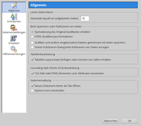

KompoZer
Dieser Artikel wurde für die folgenden Ubuntu-Versionen getestet:
Ubuntu 16.04 Xenial Xerus
Ubuntu 14.04 Trusty Tahr
Zum Verständnis dieses Artikels sind folgende Seiten hilfreich:
KompoZer  ist ein freier HTML-Editor für Linux und Windows, der nach dem "What You See Is What You Get"-Prinzip (WYSIWYG) arbeitet. Das heißt, dass man Webseiten ohne HTML-Kenntnisse – ähnlich wie mit einer Textverarbeitung – erstellen kann. Das Ergebnis kann sofort betrachtet werden, ohne extra einen Browser aufzurufen. KompoZer ist eine weiterentwickelte Version von Nvu, dem Webeditor aus der Mozilla-Suite.
ist ein freier HTML-Editor für Linux und Windows, der nach dem "What You See Is What You Get"-Prinzip (WYSIWYG) arbeitet. Das heißt, dass man Webseiten ohne HTML-Kenntnisse – ähnlich wie mit einer Textverarbeitung – erstellen kann. Das Ergebnis kann sofort betrachtet werden, ohne extra einen Browser aufzurufen. KompoZer ist eine weiterentwickelte Version von Nvu, dem Webeditor aus der Mozilla-Suite.
Das Programm ist gerade für Einsteiger empfehlenswert. Noch einfacher geht die Erstellung von Internetseiten nur mit OpenOffice bzw. LibreOffice und dem dort integrierten HTML-Export. Eine andere Alternative ist BlueGriffon, das sich aber eher an fortgeschrittene HTML-Entwickler richtet.
Installation¶
KompoZer ist nach Ubuntu 12.10 nicht mehr in den Paketquellen von Ubuntu verfügbar. Daher muss das Programm manuell installiert werden. Zuerst installiert man die Abhängigkeiten:
libatk1.0-0
libc6
libcairo2
libfontconfig1
libfreetype6
libgdk-pixbuf2.0-0
libglib2.0-0
libgtk2.0-0
libnspr4
libnss3
libpango1.0-0
libpng12-0
libstdc++6
libx11-6
libxft2
libxinerama1
libxrender1
libxt6
zlib1g
 mit apturl
mit apturl
Paketliste zum Kopieren:
sudo apt-get install libatk1.0-0 libc6 libcairo2 libfontconfig1 libfreetype6 libgdk-pixbuf2.0-0 libglib2.0-0 libgtk2.0-0 libnspr4 libnss3 libpango1.0-0 libpng12-0 libstdc++6 libx11-6 libxft2 libxinerama1 libxrender1 libxt6 zlib1g
sudo aptitude install libatk1.0-0 libc6 libcairo2 libfontconfig1 libfreetype6 libgdk-pixbuf2.0-0 libglib2.0-0 libgtk2.0-0 libnspr4 libnss3 libpango1.0-0 libpng12-0 libstdc++6 libx11-6 libxft2 libxinerama1 libxrender1 libxt6 zlib1g
Dann trennen sich – je nach Systemarchitektur (32- oder 64-Bit) – die Wege [2]:
32-Bit:
wget https://launchpad.net/ubuntu/+archive/primary/+files/kompozer-data_0.8%7Eb3.dfsg.1-0.1ubuntu2_all.deb wget https://launchpad.net/ubuntu/+archive/primary/+files/kompozer_0.8%7Eb3.dfsg.1-0.1ubuntu2_i386.deb wget https://launchpad.net/ubuntu/+archive/primary/+files/libidl0_0.8.14-1_i386.deb sudo dpkg -i libidl0_0.8.14-1_i386.deb sudo dpkg -i kompozer-data_0.8~b3.dfsg.1-0.1ubuntu2_all.deb sudo dpkg -i kompozer_0.8~b3.dfsg.1-0.1ubuntu2_i386.deb
64-Bit:
wget https://launchpad.net/ubuntu/+archive/primary/+files/kompozer-data_0.8%7Eb3.dfsg.1-0.1ubuntu2_all.deb wget https://launchpad.net/ubuntu/+archive/primary/+files/kompozer_0.8%7Eb3.dfsg.1-0.1ubuntu2_amd64.deb wget https://launchpad.net/ubuntu/+archive/primary/+files/libidl0_0.8.14-1_amd64.deb sudo dpkg -i libidl0_0.8.14-1_amd64.deb sudo dpkg -i kompozer-data_0.8~b3.dfsg.1-0.1ubuntu2_all.deb sudo dpkg -i kompozer_0.8~b3.dfsg.1-0.1ubuntu2_amd64.deb
Man erhält ein englischsprachiges Programm. Auf Wunsch kann man ein Sprachpaket installieren.
Deutsches Sprachpaket¶
Für KompoZer gibt es Sprachpakete für zahlreiche Sprachen (und verschiedene Programmversionen!). Die Sprachpakete gibt es beim KompoZer l10n project . Die zur eigenen Version passende .xpi-Datei lädt man sich herunter, konkret also kompozer-0.8b3.de.xpi  . Dann öffnet man KompoZer, geht zum Menüpunkt "Tools -> Extensions" bzw. "Tools -> Add-Ons", drückt die Schaltfläche "Install" und wählt das heruntergeladene Sprachpaket aus. Anschließend muss KompoZer neu gestartet werden.
. Dann öffnet man KompoZer, geht zum Menüpunkt "Tools -> Extensions" bzw. "Tools -> Add-Ons", drückt die Schaltfläche "Install" und wählt das heruntergeladene Sprachpaket aus. Anschließend muss KompoZer neu gestartet werden.
Zur Rechtschreibprüfung kann ebenfalls ein Add-On installiert werden: myspell-Rechtschreibprüfung
Einstellungen¶
 Über den Menüeintrag "Bearbeiten -> Einstellungen" gelangt man zur Konfiguration des Programms. Diese ist aufgrund einer besseren Übersichtlichkeit in mehrere Untermenüs aufgeteilt. Gespeichert werden die Einstellungen im versteckten Ordner ~/.kompozer.net/ im Homeverzeichnis.
Erweiterungen¶
Eine kommentierte Übersicht und Möglichkeit zum Herunterladen von Erweiterungen (Add-Ons) für die aktuelle Entwicklerversion gibt es hier: KompoZer Erweiterungen . Da auch andere Programme XPI-Dateien verwenden, wird empfohlen, Erweiterungen immer zuerst via rechter Maustaste  herunterzuladen und erst dann über "Extras -> Add-ons" zu installieren.
herunterzuladen und erst dann über "Extras -> Add-ons" zu installieren.
Links¶
Anleitung zur Benutzung von KompoZer
 im PDF-Format
im PDF-Formatfranzösisches Kompozer Forum
 mit starker Beteiligung von Kaze (Entwickler von Kompozer)
mit starker Beteiligung von Kaze (Entwickler von Kompozer)
Webentwicklung
 Übersichtsartikel
Übersichtsartikel
- Erstellt mit Inyoka
-
 2004 – 2017 ubuntuusers.de • Einige Rechte vorbehalten
2004 – 2017 ubuntuusers.de • Einige Rechte vorbehalten
Lizenz • Kontakt • Datenschutz • Impressum • Serverstatus -
Serverhousing gespendet von